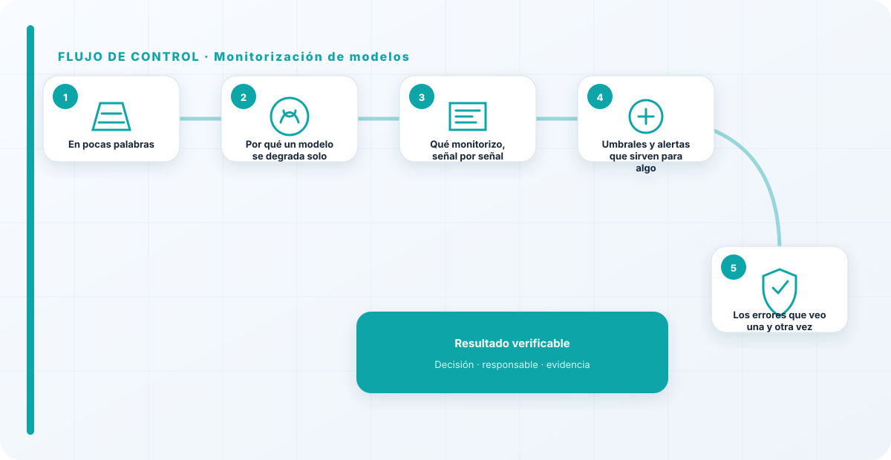
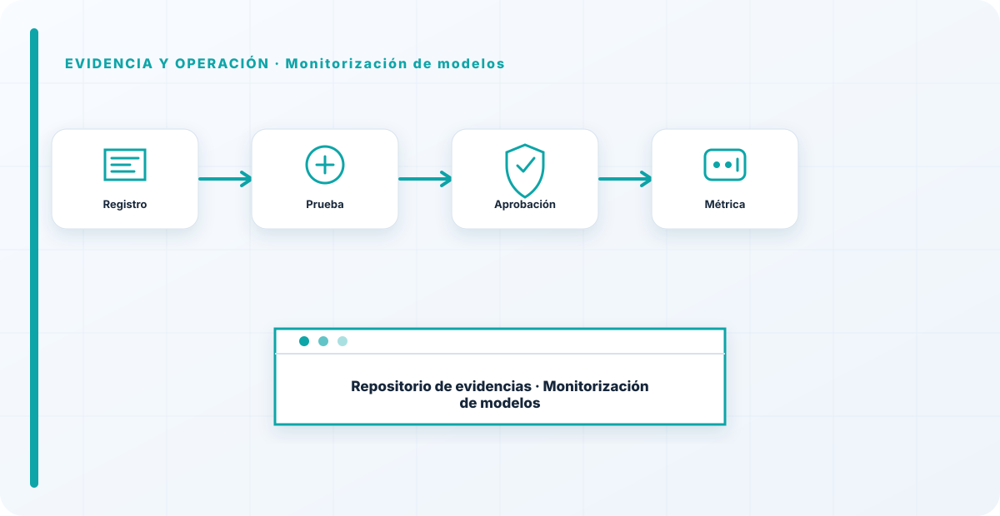

En pocas palabras
Un modelo se degrada solo, en silencio, sin dar un error. No se cae como un servidor; simplemente empieza a acertar menos porque el mundo sobre el que aprendió ha cambiado. A eso lo llamamos drift, y es completamente invisible si no lo vigilas activamente. Monitorizar modelos es poner los ojos donde no se ven a simple vista: en si el rendimiento se mantiene, en si los datos que entran se siguen pareciendo a los de entrenamiento, y en si el modelo hace lo que dijimos que haría y para lo que dijimos.
Por qué un modelo se degrada solo
Es la idea que más cuesta a quien viene del software tradicional: un modelo puede empeorar sin que nadie lo toque. Los datos del mundo real derivan constantemente —cambian los hábitos de la gente, los precios, el lenguaje, las modas— y el modelo sigue aplicando lo que aprendió de un mundo que ya cambió. No hay una excepción en los logs, no hay una pantalla roja, no hay una alarma de sistema caído. Solo hay decisiones cada vez un poco peores que nadie nota hasta que el daño acumulado es grande.
Ese es justo el peligro: el fallo silencioso. Un servidor que se cae te avisa a gritos; un modelo que deriva no dice nada. Por eso la monitorización de modelos no es un extra operativo bonito, es la única forma de ver lo invisible antes de que se convierta en un incidente con nombre y apellidos.
Qué monitorizo, señal por señal
No vigilo solo "que el servicio esté arriba", que es lo que casi todo el mundo confunde con monitorizar. Miro varias señales distintas: el rendimiento —¿sigue acertando como el primer día, medido contra la realidad?—; el drift de datos —¿lo que entra hoy se parece a lo que usé para entrenar, o ha cambiado el perfil?—; el uso —¿se está usando para lo que se aprobó, o alguien lo ha reutilizado para otra cosa?—; y el coste, que en IA se dispara con una facilidad pasmosa y conviene vigilar antes de que llegue la factura.
Cada una de estas señales tiene un umbral, y cuando se cruza, la idea no es que llegue un correo a un buzón, sino que salte una alerta que dispare una acción concreta —revisar, reentrenar o parar—. Vigilar el uso, por cierto, es de las cosas que más incidentes previene: te enteras a tiempo de que un modelo aprobado para una cosa se está usando para otra que nadie evaluó.

Umbrales y alertas que sirven para algo
Una alerta que no dispara una acción es ruido, y el ruido, tarde o temprano, se silencia. Es una ley casi física de cualquier equipo: si las alertas no llevan a nada, la gente aprende a ignorarlas, y entonces las importantes se pierden entre las inútiles. Por eso cada umbral que pongo va atado a dos cosas: un responsable y una respuesta. Si el rendimiento cae por debajo de tal punto, esto es lo que pasa, y esta persona concreta lo hace.
Y la monitorización no vive sola: alimenta la observabilidad de tus sistemas de IA y, cuando algo se rompe de verdad, es el disparador de la respuesta a incidentes. Una buena monitorización de modelos es, en el fondo, un sistema de alarma temprana conectado a la mano que apaga el fuego.
El error más peligroso con los modelos no es que fallen, es que fallen callados. Un sistema que se cae te avisa; un modelo que deriva, no. Por eso me fío más de una organización que monitoriza dos métricas de verdad y actúa sobre ellas que de una con un panel precioso de veinte gráficas que nadie mira. La monitorización vale por las acciones que dispara, no por lo bonita que se ve en una pantalla de la sala de reuniones.
Los errores que veo una y otra vez
- Asumir que un modelo que funcionó seguirá funcionando.
- Monitorizar solo disponibilidad y no rendimiento ni drift.
- Alertas que no disparan ninguna acción y acaban silenciadas.
- Paneles bonitos que nadie mira ni usa para decidir.
- No vigilar el uso, y descubrir tarde que el modelo se usa para lo que no se aprobó.
- No vigilar el coste, que en IA se dispara solo.
Cómo lo llevaría a un entorno real
Cuando aterrizo monitorización de modelos en una organización, no empiezo por comprar una herramienta ni por redactar veinte páginas. Empiezo por dibujar qué ocurre hoy: quién solicita el cambio, quién lo aprueba, qué sistemas intervienen, qué datos cruzan el proceso y quién se entera cuando algo falla. Ese dibujo suele descubrir más problemas que cualquier checklist. En gobierno de modelos, lo peligroso no es solo carecer de controles; también lo es creer que existen porque alguien los escribió una vez.
Después separo lo imprescindible de lo deseable. Lo imprescindible debe poder comprobarse: un responsable identificado, una regla clara, una evidencia fechada y un mecanismo para reaccionar. En este caso revisaría especialmente modelo, versión y dataset. No me vale una respuesta del tipo «lo gestiona el proveedor» o «eso lo mira seguridad». Necesito saber qué persona toma la decisión, con qué información y dentro de qué plazo.
La implantación debe crecer con el riesgo. Un piloto interno puede funcionar con una ficha breve y una revisión manual. Un sistema que afecta a clientes, empleados, dinero o información sensible necesita segregación de funciones, pruebas independientes, monitorización y un expediente mantenido. Mi criterio es sencillo: cuanto más difícil sea deshacer el daño, más fuerte debe ser la barrera antes de producción.
Decisiones que deben quedar por escrito
Hay decisiones que no deberían vivir en una reunión ni en un mensaje de chat. Para monitorización de modelos dejaría documentados el alcance, los supuestos, los límites de uso, las excepciones aceptadas y las condiciones que obligan a detener o reevaluar. El documento no tiene que ser enorme, pero sí debe permitir que otra persona entienda por qué se hizo lo que se hizo.
También registraría quién puede cambiar evaluación, quién valida drift y quién recibe las alertas relacionadas con criterios de aceptación. Cuando esas tres responsabilidades se mezclan, aparece el clásico problema: el mismo equipo construye, aprueba y declara que todo funciona. No siempre se puede separar por completo, sobre todo en organizaciones pequeñas, pero al menos debe existir una revisión por alguien que no dependa del éxito inmediato del despliegue.
Las excepciones merecen un tratamiento propio. Una excepción sin fecha de caducidad acaba convirtiéndose en la arquitectura real. Por eso exigiría motivo, riesgo aceptado, responsable, compensaciones, fecha de revisión y criterio de cierre. Si falta uno de esos elementos, no es una excepción gestionada; es una deuda invisible.

Un ejemplo práctico
Imaginemos que un equipo quiere incorporar monitorización de modelos a un servicio que ya está en producción. La propuesta promete reducir tiempos y automatizar tareas, pero utiliza componentes que cambian con frecuencia. Antes de aprobarlo, pediría una prueba limitada, un inventario de dependencias, un flujo de datos y una definición clara de qué acciones quedan fuera del alcance.
Durante la prueba recogería resultados normales y casos límite. No solo miraría si funciona; comprobaría qué ocurre cuando faltan datos, cambia una versión, se pierde conectividad, llega una entrada manipulada o un usuario intenta superar sus permisos. Ahí es donde se ve si el diseño aguanta. En muchas pruebas felices todo parece seguro porque nadie ha intentado romper la hipótesis de partida.
Si los resultados son aceptables, la salida a producción tendría condiciones: versión fijada, configuración aprobada, logs disponibles, responsables de guardia, procedimiento de rollback y revisión tras las primeras semanas. Si alguno de esos elementos no existe, prefiero retrasar el despliegue. Un día de demora suele ser más barato que investigar después un comportamiento que nadie puede reconstruir.
Qué evidencias guardaría
Para demostrar que el control funciona conservaría evidencias que cuenten una historia completa, no capturas sueltas. La historia debe enlazar necesidad, decisión, implementación, prueba y operación. En monitorización de modelos eso incluye como mínimo la ficha del activo, el diagrama vigente, la configuración aprobada, el resultado de las pruebas y el registro de cambios.
No guardaría información por acumular. Si los logs contienen prompts, documentos, datos personales o secretos, aplicaría minimización, control de acceso y retención. La evidencia debe ayudar a investigar y auditar sin crear una segunda fuga de información. Es frecuente endurecer el sistema principal y dejar un repositorio de evidencias abierto a demasiadas personas.
- Propietario y finalidad de monitorización de modelos, con fecha de revisión.
- Inventario de modelo, versión y dependencias asociadas.
- Criterios de aceptación y resultados sobre dataset y evaluación.
- Configuración efectiva, versión y aprobación del cambio.
- Alertas, incidentes, excepciones y acciones correctivas cerradas.
Señales de que el control no está funcionando
El primer síntoma es que nadie sabe responder con rapidez quién es el responsable. El segundo es que la documentación describe una versión distinta de la que está operando. El tercero es que las alertas existen, pero llegan a un buzón que nadie revisa. Cuando aparecen esos tres síntomas, el problema no es tecnológico: el control se ha desconectado de la operación.
También desconfío de las métricas demasiado perfectas. Cero incidentes, cero excepciones y cien por cien de cumplimiento pueden significar excelencia, pero con frecuencia significan que no estamos mirando. Prefiero indicadores que enseñen tendencia: tiempo de corrección, antigüedad de excepciones, cobertura de pruebas, cambios sin revisión y reincidencias.
Por último, revisaría el comportamiento después de cada cambio significativo. En IA, una actualización de modelo, dataset, prompt, herramienta, permiso o proveedor puede alterar el riesgo sin cambiar el nombre del servicio. Si el proceso solo reevalúa cuando se crea un proyecto nuevo, se quedará ciego durante la mayor parte de la vida útil.
Mi criterio de cierre
Considero que monitorización de modelos está razonablemente controlado cuando el equipo puede explicar el proceso sin depender de una sola persona, reconstruir una decisión con evidencias y detener el servicio sin improvisar. No busco perfección documental; busco que la organización pueda tomar decisiones repetibles bajo presión.
El cierre no consiste en marcar todas las casillas. Consiste en demostrar que los riesgos relevantes tienen propietario, que los controles se prueban y que las desviaciones producen una acción. Si la evidencia no cambia ninguna decisión, probablemente estamos generando burocracia. Si una decisión importante no deja evidencia, estamos creando fragilidad.
Este enfoque es el que intento mantener en toda CyberLibrary AI: explicar el control de forma que lo entienda negocio, pero con suficiente profundidad para que arquitectura, seguridad, auditoría y operaciones puedan aplicarlo de verdad.
Referencias y marcos relacionados
Contenido educativo y técnico. No sustituye asesoramiento jurídico ni una auditoría formal.